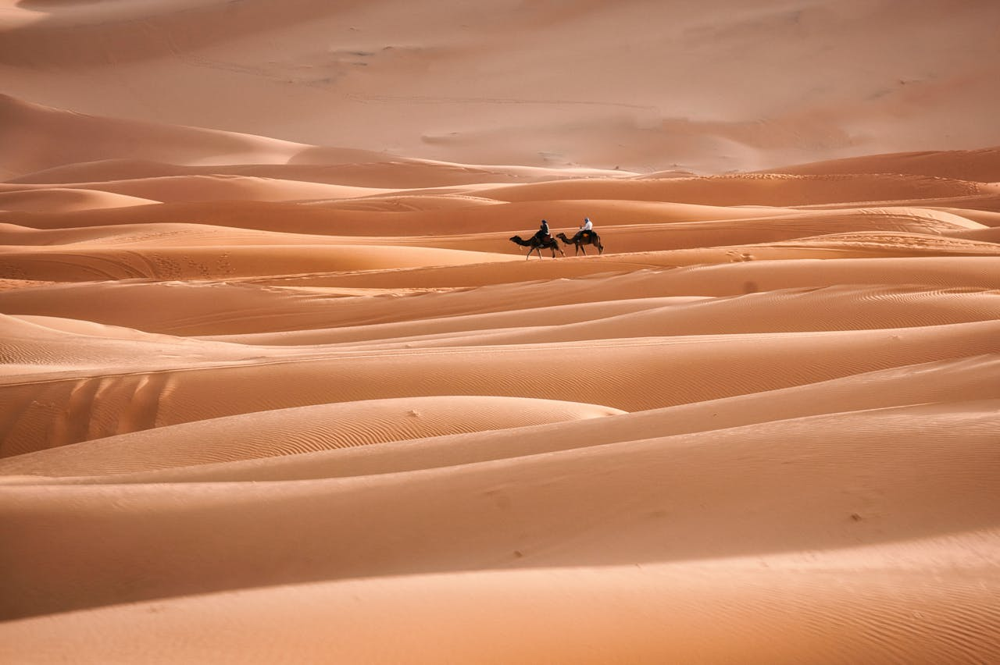
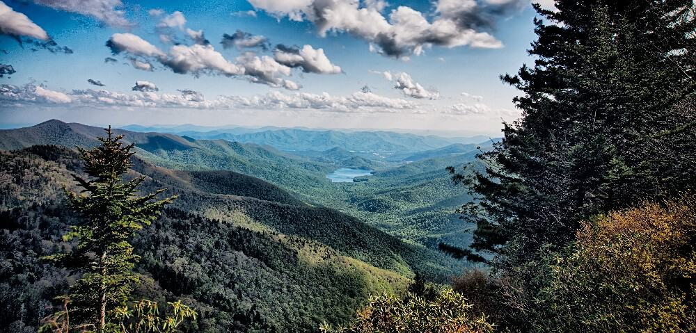
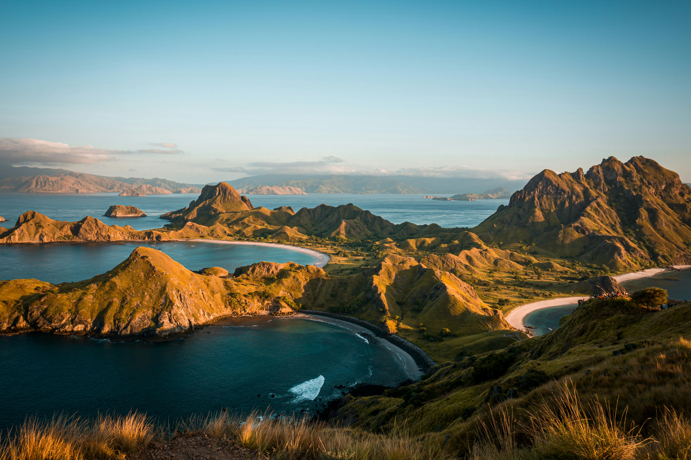

-
Deserto do Saara
Um dos maiores desertos do mundo têm muitas exeperiências para oferecer, confira!
Pontos turísticos
- Oásis e vilarejos
- Templo de Karnak
- Colossos de Mêmnon
A Floresta Tropical dos Apalaches
Uma bela floresta localizada nas Montanhas Apalaches, nos Estados Unidos. Faça trilhas e aproveite sua estadia em hospedagem locais.
Pontos turísticos
- Parque Nacional de Shenandoah (Virgínia)
- Parque Estadual de Gorges (Carolina do Norte)
- Floresta Nacional de Nantahala (Carolina do Norte e Tennessee)
Parques nacionais da Indonésia
Foto pertencente a este local: East Nusa Tenggara, Indonesia.
Pontos turísticos
- Parque Nacional de Komodo
- Parque Nacional de Ujung Kulon
- Parque Nacional de Gunung Leuser